This vignette is designed to be used as a getting started demo 1 for the isobxr package.
Please refer to the general vignette for a more exhaustive explanation of the package content and use.
Prepare the demo
If not done yet, install the isobxr package (installation instructions).
Load isobxr in R:
- Note
- Templates for all input and master excel files described in this vignette are available for download here.
Unzip the ABCD demo file and place it in the working directory of your choice. It is strongly advised to avoid using a working directory linked to an online backup server (such as OneDrive) since it could cause some issues with adressing of output files. If done so, users are then advised to turn the backup server software offline during the use of isobxr functions.
Take note of the path to this folder, for instance:
workingdir <- "/Users/username/Documents/isobxr/demos/1_ABCD/"
or set it as a working directory, for instance:
setwd("/Users/username/Documents/isobxr/demos/1_ABCD")
Everything is now ready to run box models with isobxr.
Systems and isobxr master file
We consider the demonstration isobxr master file (0_ISOBXR_MASTER.xlsx) stored in the working directory. In this demonstration example, the isobxr master file describes an imaginary model, designed for the calcium \(^{44}Ca/^{42}Ca\) isotope ratios.

The BOXES sheet describes 4 finite boxes (A, B, C, D) and 2 infinite boxes (SOURCE and SINK).
The layout of the boxes in the diagram rendering aims at placing the finite boxes on the four corners of 10x10 units square, and the two infinite boxes on the higher end of the layout (y = 15), with SOURCE on the far left and SINK on the far right.
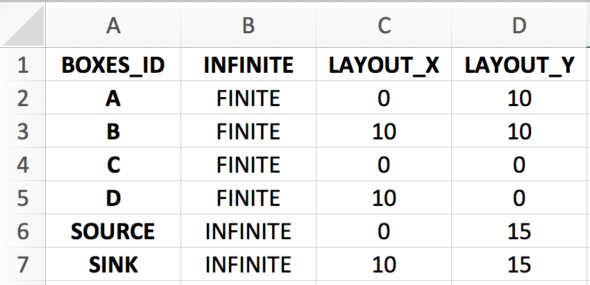
We assume that fluxes are expressed in mg of Ca per day, sizes in mg of Ca and run time units will be days.
The FLUXES sheet describes 5 flux lists
-
Fx1_ABC_bal describes a balanced closed system composed of 3 finite boxes A, B and C.
-
Fx2_ABC_unbal describes an unbalanced closed system composed of 3 finite boxes A, B and C.
-
Fx3_ABC_unbal describes an unbalanced closed system composed of 3 finite boxes A, B and C.
-
Fx4_ABCD_bal describes a balanced closed system composed of 4 finite boxes A, B, C and D.
-
Fx5_ABCD_unbal describes an unbalanced closed system composed of 4 finite boxes A, B, C and D.
- Fx6_ABC_open_bal describes a balanced open system composed of 4 finite boxes A, B, C and D and two infinite boxes SOURCE and SINK.
- Fx7_ABC_open_unbal describes an unbalanced open system composed of 4 finite boxes A, B, C and D and two infinite boxes SOURCE and SINK.
Sizes of all finite boxes are here set at 2000 mg, infinite boxes are set a 1e15 mg.
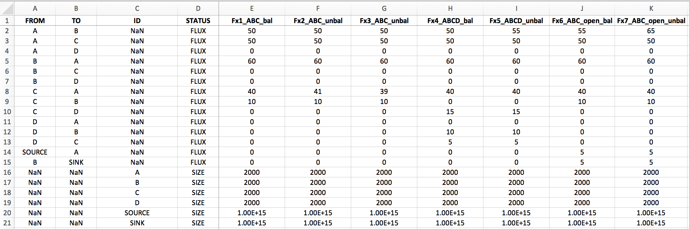
The COEFFS sheet describes 5 lists of fractionation coefficients:
-
a0 describes no isotope fractionation (all \(\alpha_{i \to j}\) being equal to one)
-
a1 describes a system with 1 fractionation coefficient being different from 1:
\(\alpha_{A \to B} = 0.999\)
-
a2 describes a system with 2 fractionation coefficients being different from 1:
\(\alpha_{A \to B} = 0.999\), \(\alpha_{B \to A} = 1.001\)
-
a3 describes a system with 3 fractionation coefficients being different from 1:
\(\alpha_{A \to B} = 0.999\), \(\alpha_{B \to A} = 1.001\), \(\alpha_{C \to A} = 0.9997\)
-
a4 describes a system with 1 fractionation coefficient being different from 1:
\(\alpha_{C \to D} = 0.99\)
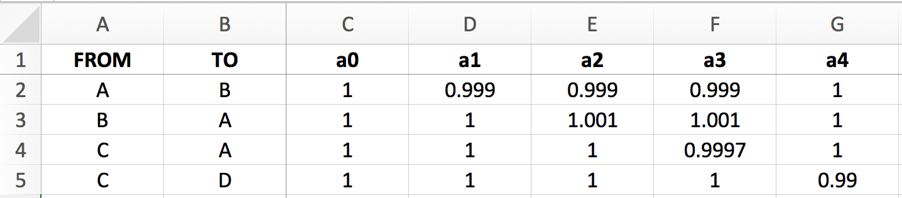
Run single box models
Balanced 3-boxes closed system model
We consider here the case a balanced closed system of 3 finite boxes (flux list Fx1_ABC_bal).
For this run we use the a1 fractionation coefficients list.
We will run this model for total time of 2500 days with a resolution of 1 calculation every 10 days (250 steps).
run_isobxr(workdir = "/Users/username/Documents/isobxr/demos/1_ABCD/", # isobxr master file work. dir. SERIES_ID = "ABC_balanced_closed", # series ID of the set of runs flux_list_name = "Fx1_ABC_bal", # which flux list from FLUXES sheet coeff_list_name = "a1", # which coefficients list from COEFFS sheet t_lim = 2500, # how long do I want to run nb_steps = 250, # how many steps over this run duration time_units = c("days", "years"), # run time units (days), plot time units (years) PLOT_evD = TRUE) # export plot as pdf
The first default outputs of the run are the messages sent by the function on the R console (all of these pieces of information being besides stored in the LOG file).
The run_isobxr function therefore choses to run the analytical solver (ana_slvr).
In the case of this run we can see the following messages:
#> [1] "< All boxes are FINITE >"
#> [1] "< Running ana_slvr (BALANCED FINITE BOXES) > "This is expected because:
no INFINITE box has been declared as connected to the A, B and C boxes
all inward and outward fluxes for each box are expected to be balanced
The associated pre-run outputs (optional) are the model diagrams of fluxes (left) and of fractionation coefficients (right, expressed as amplitude of isotope fractionation, in ‰).
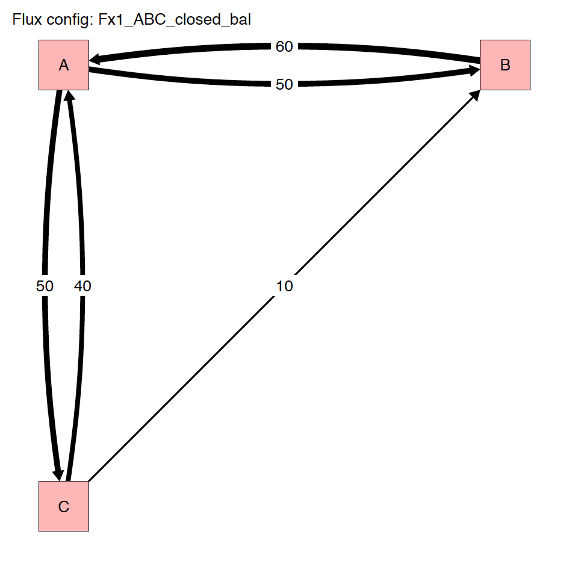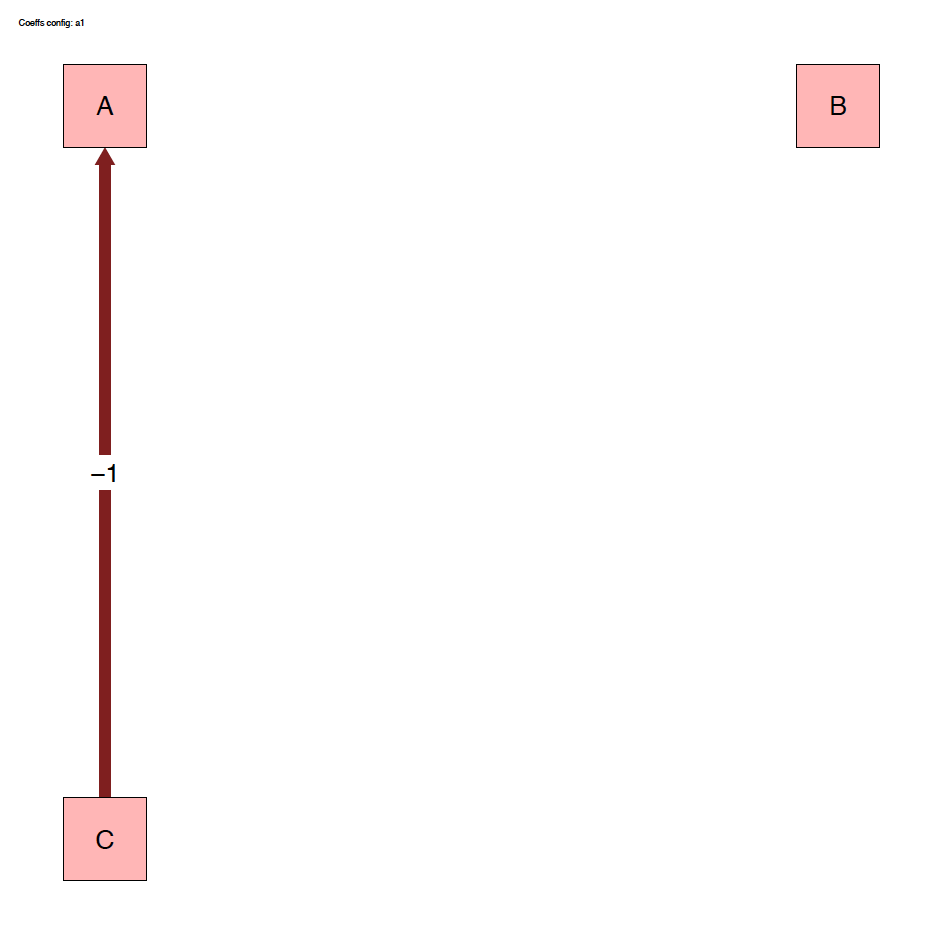
Finally, the post-run output includes the evolution of \(\delta\) values over the run duration, shown in years for this run.
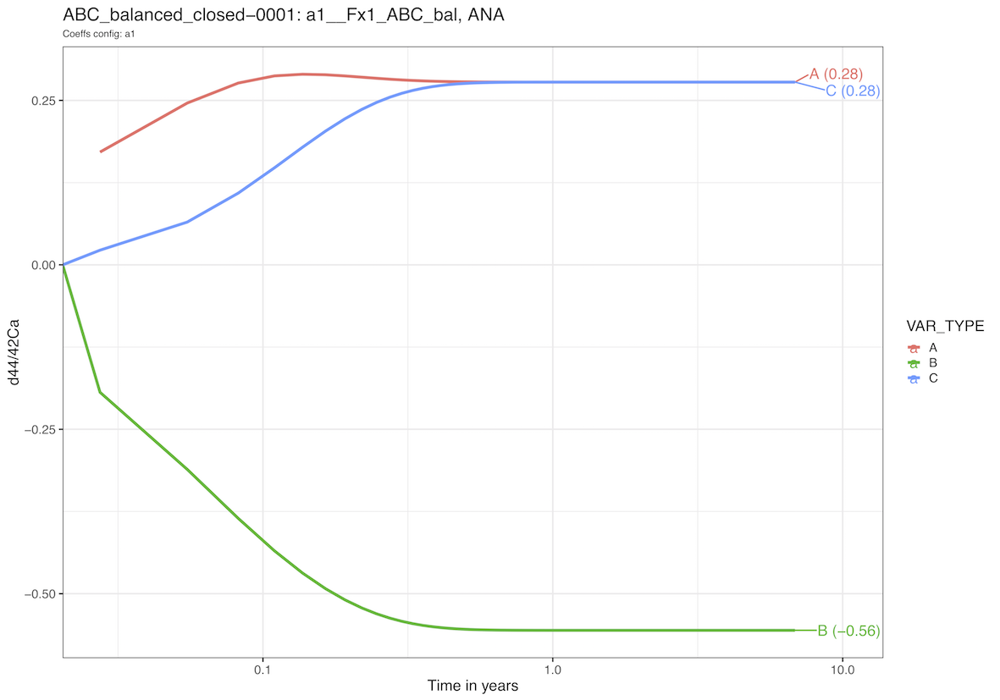
Note that the run resolution can be seen by the discrete behavior of the evolution of \(\delta\) values on the left handside of the logarithmic time scale. This display effect would be smoothed out by a higher run resolution (nb_steps = 2500 or 25000 for instance).
Unbalanced 3-boxes closed system model
We consider here the case of an unbalanced closed system of 3 finite boxes (flux list Fx2_ABC_unbal).
For this run we use the a1 fractionation coefficients list.
We will run this model for a total time of 2500 days with a resolution of 1 calculation every 10 days (250 steps).
run_isobxr(workdir = "/Users/username/Documents/isobxr/demos/1_ABCD/", # isobxr master file work. dir. SERIES_ID = "ABC_unbalanced_closed", # series ID of the set of runs flux_list_name = "Fx2_ABC_unbal", # which flux list from FLUXES sheet coeff_list_name = "a1", # which coefficients list from COEFFS sheet t_lim = 2500, # how long do I want to run nb_steps = 250, # how many steps over this run duration time_units = c("days", "years"), # run time units (days), plot time units (years) PLOT_evD = TRUE) # export plot as pdf
The first default outputs of the run are the messages sent by the function on the R console (all of these pieces of information being besides stored in the LOG file).
In the case of this run we can see the following messages:
#> [1] "< All boxes are FINITE >"
#> [1] "< A IN-OUT BALANCE is pos >"
#> [1] "< C IN-OUT BALANCE is neg (max run: 2000 t units) >"
#> [1] "< Running num_slvr (UNBALANCED FINITE BOXES) >"
#> [1] "*** UPDATED TOTAL RUN TIME *** < Total run time has been changed from 2500 to 2000 (limiting box: C) > "The first message is expected since no INFINITE box has been declared as connected to the finite boxes defining the closed system.
The second and third lines point out the fact that boxes A and C are out of balance: A accumulates calcium while C loses calcium.
The function also tells us that it will take in total 2000 days for the box C to be totally emptied. This is expected since C has a size of 2000 mg and, as can be seen on the flux diagram below, C loses 1 mg of Ca per day.
The run_isobxr function therefore choses to run the numerical solver (num_slvr).
Finally, the run_isobxr function warns the user: it automatically updated the total run time, changing it from 2500 days to 2000 days because the box C would have lost all of its calcium by 2000 days.
This is due to the fact that the user defined run duration was too long and would lead to the total emptying of box C.
The associated pre-run outputs (optional) are the model diagrams of fluxes (left) and of fractionation coefficients (right, expressed as amplitude of isotope fractionation, in ‰).
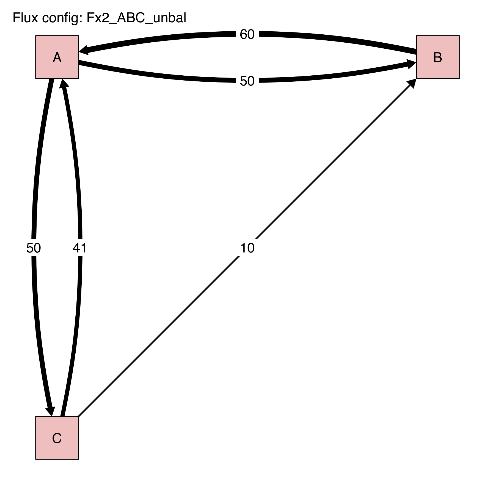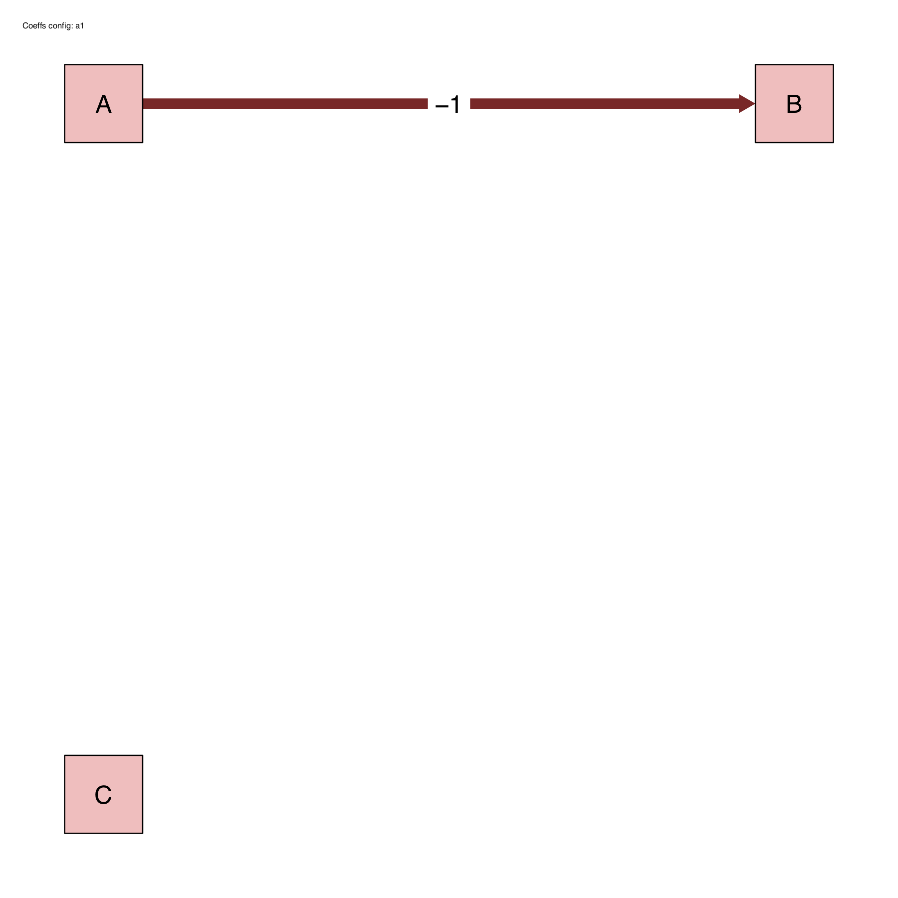
Finally, the post-run output includes the evolution of \(\delta\) values over the run duration, shown in years for this run.
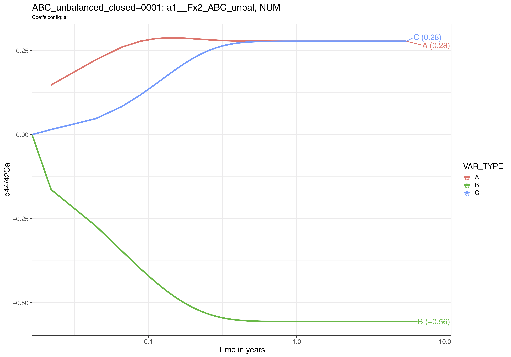
Note that in this example, the slight imbalance does not affect the overall bevaviour of the system at time scale when compared to the balanced system.
Dealing with an open system
The user should define a source box and a sink box and declare them in the BOXES sheet as INFINITE. We give below an example of a run of for an open system.
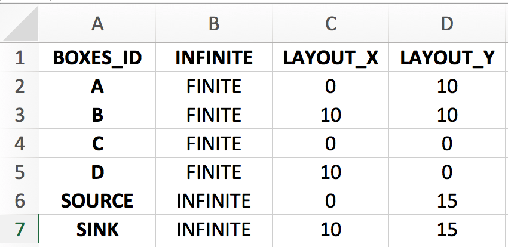
These boxes should have infinite sizes defined in relation to the system scale (important for runs with unbalanced finite boxes, which will use the numerical solver). In this example, both source and sink box sizes were set at \(10^{15}\).
The source box should only be used with outward fluxes to the open system and should not receive any flux from it.
The sink box should only be used with inward fluxes from the open system and should not send any flux to it.
The function call would be the following for a run of 25000 days, with one calculation every 10 days (nb_steps = 2500).
We use the Fx6_ABC_open_bal flux list and the a1 coefficient list.
run_isobxr(workdir = "/Users/username/Documents/isobxr/demos/1_ABCD/", # isobxr master file work. dir. SERIES_ID = "ABC_balanced_open", # series ID of the set of runs flux_list_name = "Fx6_ABC_open_bal", # which flux list from FLUXES sheet coeff_list_name = "a1", # which coefficients list from COEFFS sheet t_lim = 25000, # how long do I want to run nb_steps = 2500, # how many steps over this run duration time_units = c("days", "years"), # run time units (days), plot time units (years) PLOT_evD = TRUE) # export plot as pdf
We obtain the following diagrams, where the infinite boxes display a different color.
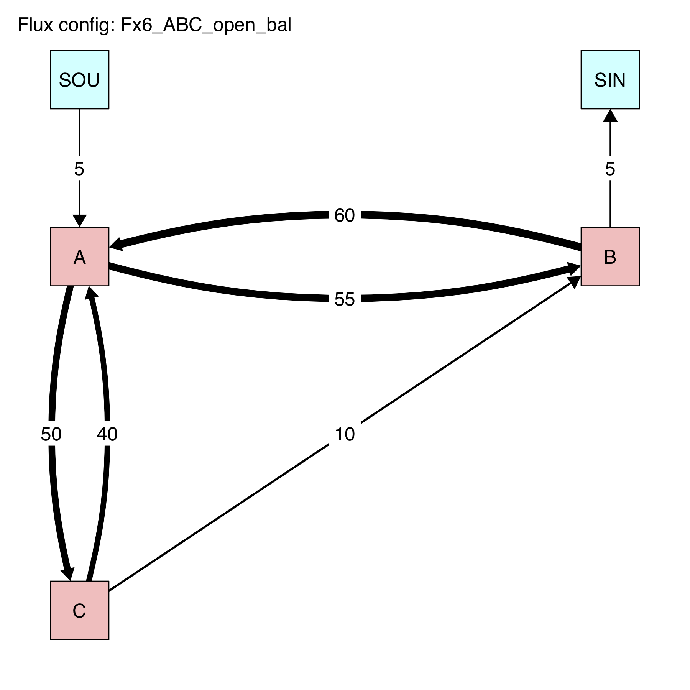
And we finally obtain the following plot of the evolution of \(\delta\) values in all finite boxes over time, where we observe the relaxation of the system to it's steady state.
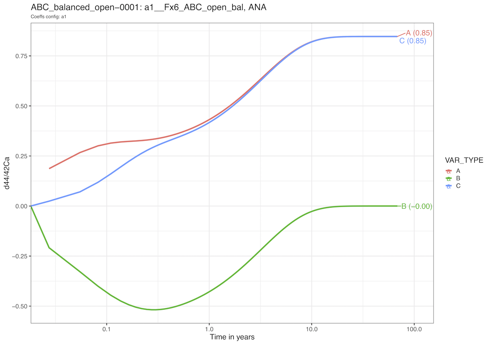
Note that both infinite boxes are hidden from this graphic representation but the isotope compositions of all boxes - including source and sink - are stored in the output data files.
While the sink (or waste) box is not informative as such, the source could have varying/non-zero initial \(\delta\) values, depending on the run parameters, used to force the open system. It will be notably of importance for the use of the compose_isobxr function, described thereafter.